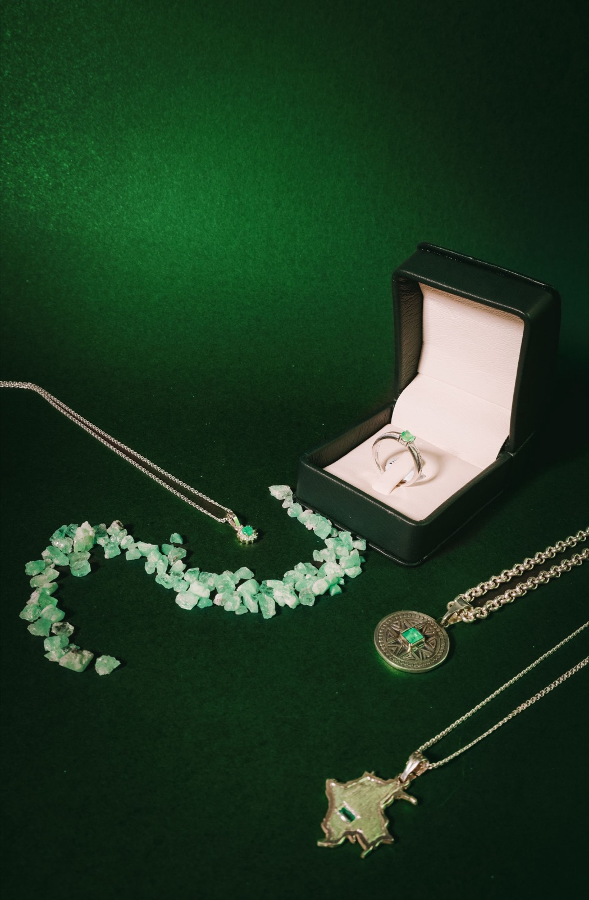

The maison
A small house with a deep green.
Our green is viridian — a pigment so dark it reads as black until the light finds it. A fair description, we think, of how jewelry should behave.
Plate no. 1
It began with one drawing
Before there was a bench, there was a sketchbook: a step-cut emerald, drawn and redrawn until the proportions stopped arguing. That drawing became plate no. 1 of the ledger, and the ledger became the maison.
We still work the same way. Two materials — Muzo-origin emerald and recycled platinum — one bench, and no piece that didn't earn its way off the page. When a client commissions work, they leave with the jewel and its original drawing, because the two were never separate things.
What we hold to
The house rules
- MaterialsMuzo-origin emeralds and recycled platinum 950 — two materials, known deeply.
- EditionsNone. Every piece is made once, for the person who asked.
- ProvenanceEach stone's cutting house and export record travel with the piece.
- GuaranteeResizing, re-oiling, and re-polishing for the life of the piece.
- PaceSix weeks at the bench. We do not do rush orders, and we say so kindly.

“We are not trying to be a large house done small. We are trying to be a small house done completely.”The founder's notebook, p. 41